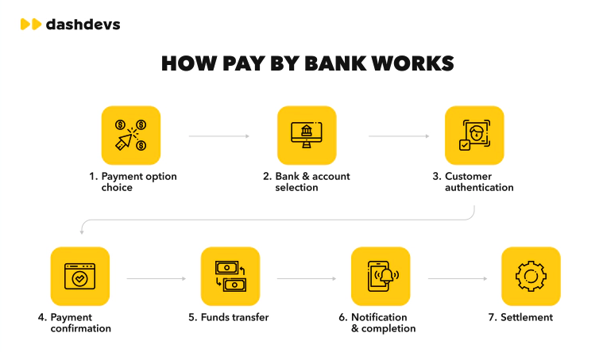
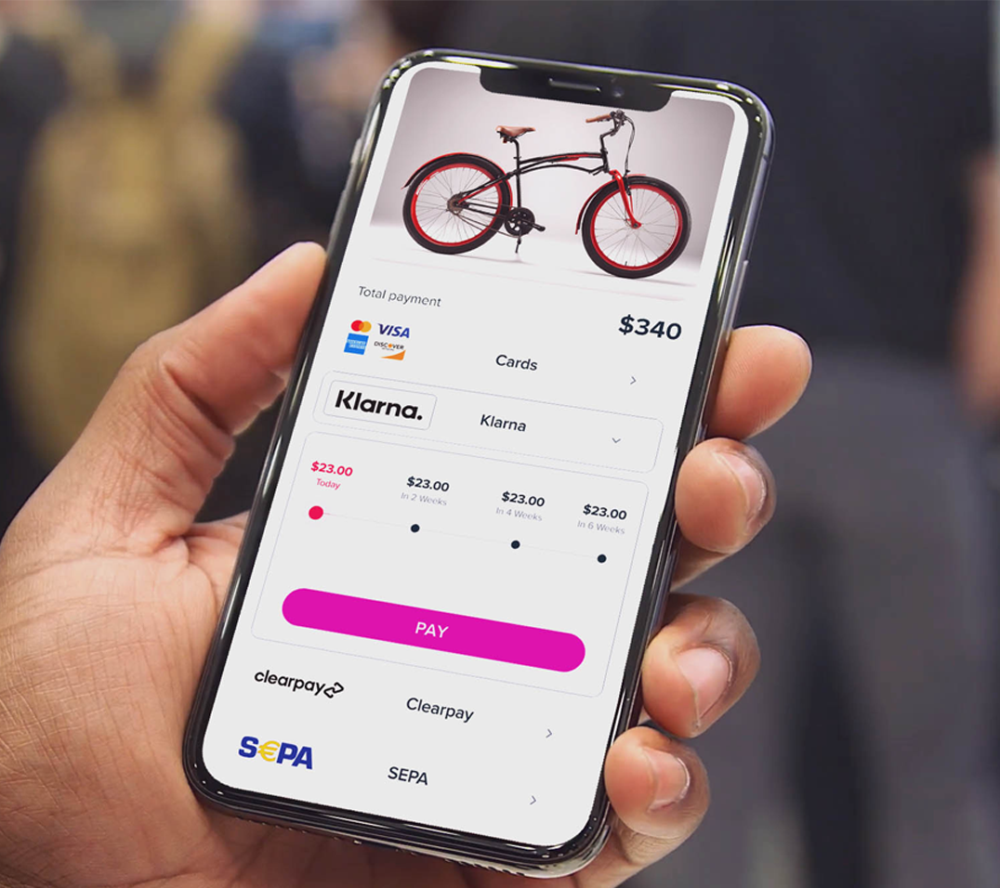
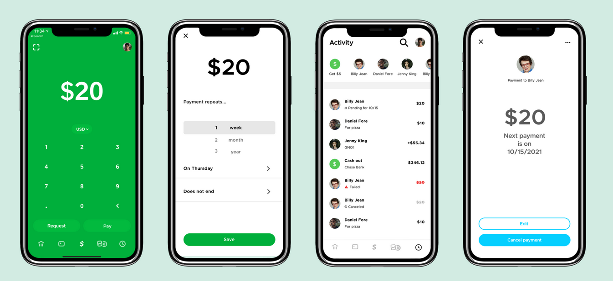
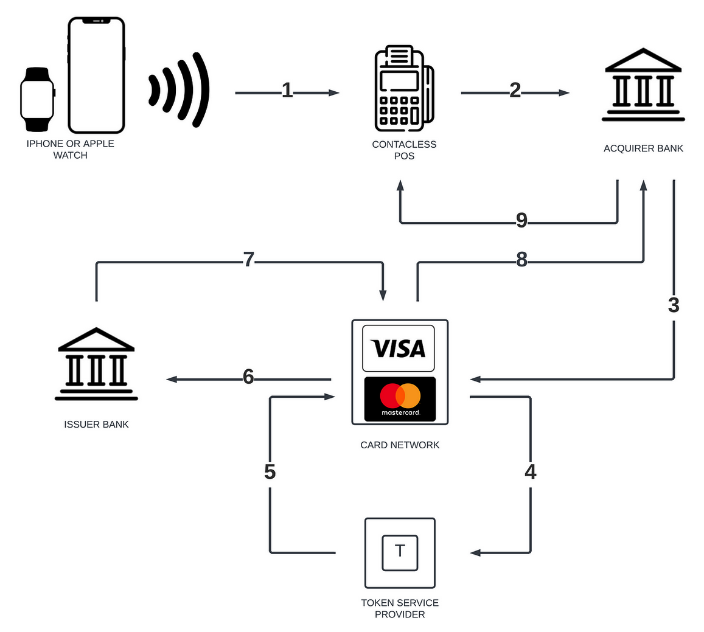
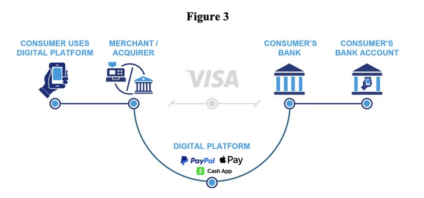

The Modern Banking Book: Non-Interest Income:#
As fintech reshapes financial services, the traditional banking model is evolving to incorporate both Banking-as-a-Service (BaaS) and fintech-enabled offerings. Here, we explore how modern banking operations—impact the banking book, non-interest income, core systems, and risk management. Our goal is to create a view around the impact of innovation, addressing legacy / risk challenges, and meeting new market demands.
Non-Interest Income Evolution:#
The financial landscape’s rapid evolution, fueled by technological innovation and shifting consumer preferences, amplifies the importance of non-interest income for revenue diversification. Non-interest income (NII) streams, increasingly vital for bank financial sustainability, expansion capital buffers and lowering loan to deposit ratios. Given the adoption of mobile and digital first consumer preferences new solutions are being explored to generate income not exposed to interest rate risk. Pay by Bank, Embedded Finance, as evolutions of payment processing have emerged as transformative drivers, unlocking new avenues for fee-based revenues, transaction fees, and commission-based income, ultimately redefining the reach of traditional banking income diversification splits between NII and Non NII income.
Select Non-interest income streams include:
Pay By Bank#
A burgeoning payment option, Pay-by-Bank enables direct bank account transfers, bypassing traditional card networks. This model reduces interchange fees, enhances security, and drives adoption by offering lower-cost payments to merchants and direct transfers for consumers.

Non-Interest Income Streams from Pay-by-Bank#
Pay-by-Bank (PBB) offers financial institutions various non-interest income opportunities:
Revenue Streams#
Transaction Fees: Banks charge fees for PBB transactions, generating revenue.
Value-Added Services: Premium PBB services, such as real-time account verification and payment guarantees.
Data Analytics: Selling transaction data insights to merchants and other stakeholders.
Payment Processing Fees: Reduced fees compared to traditional card payments.
NSF and Overdraft Fee Reduction: Reduced NSF and overdraft fees.
Benefits#
Diversified Revenue: PBB provides alternative revenue streams.
Increased Efficiency: Streamlined payment processing reduces operational costs.
Improved Customer Experience: Convenient PBB services enhance customer satisfaction.
Competitive Advantage: Offering PBB attracts and retains customers.
Challenges#
Lost Interchange Revenue: Elimination of interchange fees reduces non-interest income.
Regulatory Compliance: Ensuring compliance with regulations.
Customer Education: Educating customers about PBB benefits.
Strategic Recommendations#
Diversify Revenue Streams: Offer value-added services.
Optimize Pricing: Balance revenue and competitiveness.
Invest in Infrastructure: Develop efficient PBB systems.
Monitor Market Trends: Adjust strategies accordingly.
Potential Non-Interest Income Growth#
Increased Adoption: Growing PBB adoption drives transaction volumes.
Expanded Services: Offering premium services.
Data Monetization: Leveraging transaction data.
Partnerships: Collaborating with fintech companies.
Embedded Finance#
By integrating financial services within non-financial platforms, embedded finance allows banks to expand their customer base, especially within underserved segments. This model enhances revenue through partnership fees, transaction volume, and expanded data insights, while creating value-added services for users.
Embedded finance introduces specific risks that could impact a bank’s interest income within the banking book, mainly because the nature of embedded finance partnerships and digital service integrations affects both traditional revenue channels and risk management practices. Here are the key risks to interest income in this context:

Interoperability Risk:#
Embedded finance partnerships require interoperability between a bank’s infrastructure and third-party systems, often relying on modern cloud-based architectures and API integrations. Managing the technology and data flow securely between parties can strain resources and create operational challenges, potentially impacting the bank’s ability to grow interest-earning assets efficiently.
The need for increased investment in tech upgrades and integration with third-party systems can reduce funds otherwise allocated toward loan growth, directly affecting interest income.
Data Containment and Customer Retention Risks:#
Embedded finance ecosystems involve extensive data sharing, which can impact a bank’s access to and control over customer relationships. If customers primarily engage with financial services through third-party platforms, the bank may lose direct engagement, limiting cross-selling opportunities for traditional lending products that contribute to interest income.
Furthermore, data containment risks, such as data leaks and privacy issues, could erode customer trust and lead to regulatory fines, both of which might cause customer attrition and a reduction in the volume of interest-earning accounts.
Complex Partnership Risks:#
Partnering with fintechs and non-banking entities requires banks to navigate complex relationships with varying levels of regulatory and operational sophistication. Without clear governance, banks may be forced to take on higher levels of risk that could eventually impact interest income—especially if the partnership affects the bank’s ability to efficiently manage credit risk and customer acquisition costs.
Complex partnerships might also limit a bank’s control over pricing and product terms, which can affect the margins earned on interest-generating products.
Credit Risk and Customer Vulnerability:#
Embedded finance often involves extending credit products through non-bank platforms, where traditional credit assessment practices may be relaxed or less robust. This can increase the bank’s exposure to credit risk, especially when customers are encouraged to take on financing outside of their means.
Serving more vulnerable customer segments without appropriate risk mitigation measures may lead to higher delinquency rates, impacting the bank’s net interest income if defaults increase or if the bank must write down non-performing assets.
Distributed Risk in Financial Ecosystems:#
Distributed risk across a web of partners creates challenges in tracking and managing exposures. For example, if a partner faces liquidity issues or fails to manage its own risk effectively, this can reverberate through the network, potentially affecting the bank’s income from interest-bearing products.
Additionally, as multiple financial and non-financial entities are involved in each transaction, issues like delayed settlements or higher compliance costs could reduce the efficiency and profitability of interest-earning activities.
In summary, embedded finance’s structural complexity and reliance on third-party partnerships challenge traditional banking models. For a bank’s interest income in the banking book, these risks can lead to increased operational costs, weakened customer relationships, higher credit losses, and reduced pricing control—all of which can collectively impact net interest margins. To mitigate these risks, banks need strong risk governance frameworks, advanced data protection measures, and carefully structured partnerships that allow for agile response to evolving risks.
Embedded Finance: Revolutionizing Non-Interest Income#
Embedded finance integrates financial services into non-financial businesses, leveraging banking infrastructure. This collaboration enables banks to tap into new revenue streams, enhancing non-interest income.
Key Impacts
Positive Effects#
Increases fee income through partnerships and transactions
Diversifies revenue streams, reducing dependence on traditional interest-based income
Enhances customer experience, fostering loyalty and retention
Provides valuable data for targeted product development
Negative Effects:#
Technological integration challenges divert resources
Increased fraud and security risks
Regulatory compliance costs and potential fines
Competition from fintechs and non-financial companies
Key Non-Interest Income Streams#
Transaction fees (payment processing, transaction charges)
Partnership fees (revenue-sharing agreements)
Data analytics (selling anonymized data insights)
Value-added services (insurance, investment, advisory services)
Strategic Recommendations#
Develop Digital Capabilities: Invest in APIs, cloud computing and data analytics.
Form Strategic Partnerships: Collaborate with fintechs, tech companies and non-financial businesses.
Diversify Revenue Streams: Explore new fee-based services.
Enhance Risk Management: Implement robust risk frameworks.
Quantifying the Impact
Hypothetical Example:#
Embedded finance can increase non-interest income by:
10-15% through fee income growth
5-10% through diversified revenue streams
5-7% through improved customer retention
By understanding the effects, developing strategic partnerships and investing in digital capabilities, banks can thrive in this evolving landscape.
Payment Processing
Non-interest income receives a significant boost from payment processing, driven by efficient digital solutions facilitating real-time transactions and seamless partner platform integration. Industry giants like Visa and Fiserv provide scalable infrastructure, meeting growing demand for digital payments. Payment processing generates revenue growth, diversifies income streams, and enhances profitability. As digital payments continue to rise, payment processing will remain crucial for non-interest income. Its importance will only intensify, solidifying its position as a vital revenue driver.
Banks capitalize on emerging opportunities, addressing legacy challenges and enhancing customer experiences through personalized services.
Key Takeaways
Modern banking’s evolving nature and innovative solutions address changing market demands, driven by fintech advancements. As the banking book transforms, banks prioritize adaptability, diversification and innovation to thrive in a digital landscape.
Risk Managment of Modern Non-Interest Income#
As banking evolves, effective risk management is crucial for sustaining non-interest income growth. Emerging risks necessitate proactive strategies across technological, regulatory, counterparty and operational domains.
Technological risks, such as cybersecurity threats and API vulnerabilities, require robust governance. Regulatory risks, including compliance complexities and licensing requirements, demand timely adaptations. Counterparty risks, like partner solvency and data sharing, necessitate clear agreements.
Operational risks, including process inefficiencies and employee training, require streamlined payment processing and enhanced digital literacy. Legacy system risks, such as integration challenges and data migration complexities, call for scalable infrastructure investments.
Transition and transformation risks, including change management and cultural alignment, demand effective communication and strategic planning.
Key Considerations for Stakeholders#
Banking Executives
Prioritize risk management, invest in digital infrastructure and foster fintech partnerships.
Regulators
Establish clear guidelines, encourage collaboration and monitor emerging risks.
Policy Makers
Support regulatory innovation, promote cybersecurity initiatives and encourage financial inclusion.
Developers
Design secure APIs / Protocols, implement robust data governance and ensure seamless system integration.
Collective Responsibilities
Promote financial stability and security.
Foster collaboration and information sharing.
Drive technological advancement and innovation.
Ensure customer protection and education.
Encourage sustainable growth and risk management.
By acknowledging these risks and implementing effective management strategies, banks can navigate the evolving landscape, ensuring sustainable non-interest income growth and financial stability.
Major Players Case Studies:#
Cash App#
A pioneering mobile payment service developed by Block, Inc., has revolutionized financial transactions for underserved demographics. Targeting young individuals, low-income households, minority communities and those with limited banking history or low FICO scores, Cash App offers an intuitive platform for seamless money transfers, investing and spending.

Summary
Cash App’s Non-Interest Income Streams Cash App generates significant revenue through diverse non-interest income streams, expanding financial offerings beyond traditional lending.
Key Non-Interest Income Streams
Transaction Fees
Peer-to-peer transfer fees: Charged for instant transfers to bank accounts or debit cards.
Instant deposit fees: Applied for expedited deposits to bank accounts.
Credit card transaction fees: Levied on credit card transactions.
Investment Fees
Brokerage commissions: Charged on stock and ETF trades.
Management fees: Applied to investment portfolios.
Banking Services Fees
ATM withdrawal fees: Charged for out-of-network ATM withdrawals.
Overdraft fees: Applied for overdrafts exceeding $100.
Inactivity fees: Levied on dormant accounts.
Business Services Fees
Payment processing fees: Charged on business transactions.
Invoice payment fees: Applied to invoice payments.
Other Fees
Card replacement fees: Charged for replacing lost or damaged Cash Cards.
Expedited shipping fees: Applied for expedited Cash Card shipping.
Revenue Growth Drivers:
User growth: 55 million monthly active users, increasing adoption.
Increased adoption of services and partnerships: Expanding financial offerings.
Fee optimization: Adjusting fees to balance revenue and user satisfaction.
Challenges:
Regulatory scrutiny: Compliance with evolving financial regulations.
Competitive pressure: Differentiating from competitors.
User sensitivity to fees: Balancing revenue with user affordability.
Opportunities:
Expansion into new markets: Entering underserved or international markets.
Data monetization: Leveraging user data for targeted financial services.
Development of new services and features: Enhancing user experience.
Target Customer Segment:#
Demographics:
Young individuals (18-40 years old)
Low-income households
Minority communities
Low FICO scores: Individuals struggling with credit
Limited banking history: Unbanked or underbanked populations
Psychographics:
Tech-savvy users
Financially excluded
Key Statistics:#
$14.3 billion in revenue (34.9% increase)
$4.32 billion in gross profit
22 million Cash Card owners
73.1% usage among low-FICO score users
Strategic Implications:#
Diversification: Reduces dependence on interest-based revenue.
Scalability: Fee-based services scale with user growth.
Competitive advantage: Innovative features drive customer adoption and loyalty.
Chime#
Chime, a fee-free digital payments platform, targets a demographic often underserved by traditional banks, primarily low-income individuals and families. It generates revenue through interchange fees on card transactions and partnerships with other financial institutions. Notably, Chime is not a traditional bank but rather a fintech company specializing in payment processing services. Strategically opting out of a traditional banking license, Chime focuses on payment processing and transaction fees, avoiding costly regulatory requirements and compliance burdens, while transferring risk to partnering banks, Bancorp and Stride. Its business model revolves around non-interest income streams.
Non-Interest Income Streams#
Interchange Fees: Earned through debit and credit card transactions, with Chime receiving a portion of the 1.5% processing fee merchants pay to Visa.
Partnership Fees: Generated from collaborations with other financial institutions.
ATM Fees: Charged for out-of-network ATM withdrawals.
Overdraft Fees: Although Chime promotes fee-free overdrafts, excessive overdrafts may incur fees.
Key Factors Driving Non-Interest Income#
Network Effects: Expanding user base increases transaction volume, boosting interchange fees.
Partnership Strategy: Collaborations with financial institutions enhance revenue opportunities.
Fee-Free Services: Focus on fee-free services attracts customers, driving transaction volume.
Strategic Insights#
Diversification: Non-interest income reduces dependence on interest rates.
Scalability: Mobile-only approach efficiently acquires customers, increasing transaction volume.
Innovation: Continuous development of new features and services attracts customers.
Challenges#
Regulatory Environment: Evolving fintech regulations may impact non-interest income.
Competition: Traditional banks and fintech companies compete for market share.
With over 15 million accounts and $1 billion in annual revenue, Chime’s non-interest income model drives growth and expansion in the fintech industry.
Visa#
Visa Inc. is a multinational financial technology company facilitating electronic payments worldwide, connecting consumers, businesses, financial institutions, and governments through its secure payment network. Visa transformed the payments industry by enabling fast, secure transactions between consumers, merchants and financial institutions across the globe.

Visa’s Non-Interest Income Business Model#
Key Offerings#
Payment Processing
Credit/Debit Cards
Digital Payments
B2B Payments
Revenue Model Breakdown (FY 2023)#
Services: $14.8 billion
Data Processing: $16 billion
International Transactions: $11.6 billion
Licensing and Marketing Fees: $2.5 billion
Key Insights#
Visa Dominance: Visa holds over 60% of the market share.
Duopoly: Visa and Mastercard control 87.3% of the U.S. credit card market.
American Express: Holds majority of remaining market share.
Market Implications#
Limited Competition: Duopoly limits competition, potentially affecting innovation.
Consumer Choice: Consumers have limited options beyond Visa and Mastercard.
Market Opportunities: Niche opportunities for Discover and other emerging players.
Apple#
Apple’s ecosystem integrates Apple Pay and Apple Card, creating non-interest income through transaction fees, interest on reserves, and targeted partnerships, positioning Apple as a key player in mobile-first banking.

Fiserv#
Summary of Fiserv and Non-Interest Income Aspects Fiserv is a leading financial services technology company providing payment processing, e-payments, and financial services to banks, credit unions, and other financial institutions. Its non-interest income streams contribute substantially to its revenue, diversifying its income sources.
Key Offerings#
Payment processing services
E-payments
Core Banking and financial services
Embedded finance solutions
Pay-by-bank capabilities
Machine learning and real-time analytics tools
Non-Interest Income Streams#
Transaction fees (payment processing, ATM transactions, debit/credit card transactions)
Digital banking fees (online and mobile banking services)
Payment processing fees (merchant acquiring, payment gateway, card network services)
Data analytics and services (financial institutions)
Software licensing (digital banking platforms, payment processing software)
Challenges#
Regulatory pressures
Competition
Technological advancements
Changing customer demands
Fiserv’s non-interest income streams drive growth, scalability, and competitiveness, positioning the company for success in the financial services technology market.
Sources:#
https://stripe.com/au/resources/more/payments-risk-management-101-key-components-and-best-practices
Pay By Bank:#
https://www.aeropay.com/blog/pay-by-bank https://dashdevs.com/blog/pay-by-bank/
Embedded Finance:#
https://www.pwc.com/gx/en/industries/financial-services/publications/managing-embedded-finance-risks.html https://simon-torrance.medium.com/embedded-finance-a-game-changing-opportunity-for-incumbents-7a1d94f61796 https://www.nuvei.com/posts/embedded-finance
Cash App:#
https://www.howtheygrow.co/p/how-cash-app-grows https://www.stilt.com/blog/2020/08/squares-cash-app-is-more-popular-among-low-fico-user/ https://businessmodelanalyst.com/cash-app-business-model/ https://www.businessdasher.com/cash-app-statistics-and-facts/ https://www.oberlo.com/statistics/how-many-people-use-cash-app https://aika.substack.com/p/cashapp-is-king https://www.mollyzee.com/work/cash-app-recurring
Chime:#
https://businessmodelanalyst.com/chime-business-model/ https://startuptalky.com/chime-success-story/ https://research.contrary.com/company/chime https://sacra.com/research/chime-ex-employee-neobanking-future/
Visa:#
https://www.investopedia.com/how-visa-makes-money-4799098 https://businessmodelanalyst.com/visa-business-model/ https://iide.co/case-studies/business-model-of-visa/ https://www.moneycrashers.com/credit-card-market-share/ https://thestrategystory.com/2022/11/25/how-does-visa-work-make-money-business-model/ https://medium.com/@sahintalha1/the-magic-behind-apple-pay-018117d973e1
Apple:#
https://www.thevalueengineers.nl/insights/the-business-models-of-apple-pay-and-apple-card https://payhawk.com/en-us/blog/breakdown-of-apple-card-strategy-and-10-predictions-for-its-future https://www.consumerfinance.gov/about-us/newsroom/cfpb-orders-apple-and-goldman-sachs-to-pay-over-89-million-for-apple-card-failures/ https://www.cardknox.com/apple-pay/ https://payments1connectingthedots.substack.com/p/the-apple-pay-transaction-flow
Fiserv:#
https://m2pfintech.com/blog/future-of-core-banking-systems/ https://www.kansascityfed.org/research/payments-system-research-briefings/core-banking-systems-and-options-for-modernization/ https://www.kansascityfed.org/research/payments-system-research-briefings/market-structure-of-core-banking-services-providers/ https://www.pymnts.com/earnings/2024/fiserv-earnings-highlight-embedded-finance-and-pay-by-bank-pacts/ https://pacificnorthwestedge.substack.com/p/fiserv-fi